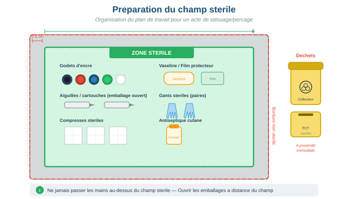

Procédures d'asepsie pour les gestes de tatouage et de perçage
Objectifs d'apprentissage
- Préparer un champ stérile selon les règles d'asepsie
- Réaliser une antisepsie cutanée en double application avec mouvement centrifuge
- Connaître les durées de conservation des antiseptiques après ouverture
- Appliquer les protocoles d'asepsie spécifiques au tatouage, au perçage et au maquillage permanent
- Maîtriser le protocole de nettoyage post-acte
1. Préparation du champ stérile
Le champ stérile est l'espace de travail sur lequel sont disposés les instruments et consommables stériles nécessaires à l'acte. Sa préparation rigoureuse est le fondement de l'asepsie.
- Désinfecter le plan de travail avec un produit détergent-désinfectant
- Effectuer un lavage antiseptique des mains (savon antiseptique, 1 minute minimum)
- Ouvrir le champ stérile (emballage pelable) sans toucher la surface intérieure
- Déposer les instruments stériles sur le champ en les laissant tomber depuis leur emballage (technique de drop)
- Ne jamais passer les mains au-dessus du champ stérile ouvert
- Le champ stérile est considéré contaminé après 30 minutes d'exposition à l'air libre
Tout ce qui est en dessous du niveau du plan de travail est considéré comme non stérile. Tout instrument tombé est contaminé et doit être remplacé. En cas de doute sur la stérilité, considérer l'élément comme contaminé. Un champ stérile mouillé ou percé est compromis et doit être refait.

Pour l'ensemble des protocoles d'asepsie en format fiche — Annexe G — Fiches de procédures : consultez les fiches G.1 à G.5 pour l'ensemble des protocoles d'asepsie
2. Antisepsie cutanée
L'antisepsie de la zone à tatouer ou percer vise à réduire au maximum la flore microbienne cutanée. Elle suit un protocole précis en double application.
- 1re application : appliquer l'antiseptique avec une compresse stérile en effectuant un mouvement centrifuge (du centre de la zone vers la périphérie, en spirale). Ne jamais revenir vers le centre.
- Laisser sécher spontanément (ne pas essuyer, ne pas souffler)
- 2e application : répéter l'opération avec une nouvelle compresse stérile, même mouvement centrifuge
- Laisser sécher complètement avant de commencer l'acte
Conservation des antiseptiques après ouverture
Les antiseptiques ont une durée de vie limitée après ouverture. Au-delà, ils perdent leur efficacité et peuvent même devenir des milieux de culture bactérienne.
| Antiseptique | Durée après ouverture | Remarques |
|---|---|---|
| Chlorhexidine | 1 mois | Noter la date d'ouverture sur le flacon |
| Bétadine (povidone iodée) | 1 mois | Vérifier l'absence de décoloration |
| Dakin (hypochlorite) | 1 mois | Conserver à l'abri de la lumière |
| Sérum physiologique | 24 heures (flacon) / usage unique (dosette) | Privilégier les dosettes individuelles |
Inscrivez systématiquement la date d'ouverture sur chaque flacon d'antiseptique. Un antiseptique périmé ou ouvert depuis trop longtemps est potentiellement contaminé et doit être jeté. Privilégiez les conditionnements individuels (dosettes, unidoses) pour éviter tout risque.
Pour le détail des antiseptiques utilisables et leurs temps de contact — Annexe H — Produits antiseptiques : consultez le tableau des antiseptiques cutanés avec leurs temps de contact et spectres d'activité
3. Protocoles d'asepsie par type d'acte
a) Tatouage
- Lavage antiseptique des mains
- Mise en place du champ stérile avec le matériel nécessaire
- Enfiler des gants à usage unique (non stériles acceptés pour le tatouage)
- Double antisepsie de la zone avec mouvement centrifuge
- Réaliser le calque/transfert du motif
- Monter l'aiguille stérile sur la machine (module à usage unique ou grip stérilisé)
- Distribuer l'encre dans des godets à usage unique (ne jamais tremper dans le flacon d'origine)
- Pendant l'acte : changer de gants si contamination, essuyer avec des compresses stériles
- Fin : nettoyer la zone au sérum physiologique, appliquer un pansement ou film protecteur
b) Perçage
- Lavage antiseptique des mains
- Mise en place du champ stérile
- Enfiler des gants stériles (obligatoires pour le perçage)
- Double antisepsie de la zone avec mouvement centrifuge
- Marquage du point de perçage avec un feutre stérile ou un cure-dent stérile trempé dans la gentiane
- Mise en place de la pince stérile (Pennington ou anneau) si nécessaire
- Insertion du cathéter stérile en un geste rapide et précis
- Retrait de l'aiguille du cathéter, transfert du bijou stérile via le tube souple
- Nettoyage au sérum physiologique stérile
- Remise de la fiche de soins post-perçage au client
Le bijou ne doit jamais toucher une surface non stérile entre sa sortie de l'emballage stérile (ou de l'autoclave) et son insertion dans le perçage. Le transfert se fait directement de l'emballage stérile au cathéter, en utilisant des gants stériles. Tout contact avec une surface contaminée invalide la stérilité.
c) Maquillage permanent
- Lavage antiseptique des mains
- Démaquillage complet de la zone avec un produit adapté
- Mise en place du champ stérile
- Enfiler des gants à usage unique
- Double antisepsie de la zone (attention aux muqueuses : utiliser un antiseptique compatible)
- Traçage du dessin préalable au crayon dermographique stérile
- Montage du module d'aiguilles stérile à usage unique sur le dermographe
- Distribution des pigments dans des godets à usage unique
- Réalisation de l'acte, essuyage régulier avec compresses stériles
- Nettoyage final au sérum physiologique, application d'un soin cicatrisant
4. Protocole de nettoyage post-acte
Après chaque acte et le départ du client, un protocole complet de nettoyage doit être réalisé avant de recevoir le client suivant.
- Élimination des DASRI : aiguilles et PCT dans le collecteur jaune, déchets mous souillés dans le sac jaune DASRI
- Pré-désinfection du matériel réutilisable (grips, tubes) : immersion dans un bac de pré-désinfection
- Retrait des protections : film étirable, manchons de protection machine, housses du fauteuil
- Nettoyage-désinfection de toutes les surfaces de contact : plan de travail, fauteuil, accoudoirs, lampe, poignées
- Nettoyage du sol si projections visibles
- Élimination des gants en dernier, lavage antiseptique des mains
- Réapprovisionnement du poste en consommables pour le client suivant
Ne planifiez jamais deux clients sans un intervalle suffisant pour réaliser le protocole complet de nettoyage post-acte. Prévoyez 15 à 20 minutes minimum entre deux rendez-vous. Un nettoyage bâclé par manque de temps est la première cause de contamination croisée.
Étude de cas
Travaux pratiques
Objectif : Réaliser un champ stérile sans rupture d'asepsie.
Consigne : Sur votre plan de travail, réalisez la mise en place complète d'un champ stérile pour un tatouage : nettoyage et désinfection du plan, ouverture du champ, disposition du matériel (godets d'encre, aiguilles, compresses, vaseline). Faites vérifier par un pair que la bordure non stérile (2-3 cm) est respectée et qu'aucun passage au-dessus du champ n'a eu lieu.
Durée estimée : 20 min
Objectif : Maîtriser la double application antiseptique.
Consigne : Sur un bras d'exercice (ou entre pairs), réalisez le protocole complet : rasage si nécessaire, 1re application antiseptique en mouvement centrifuge, séchage à l'air, 2e application, respect du temps de contact. Faites observer et évaluer par un pair.
Durée estimée : 15 min
Objectif : Enchaîner toutes les étapes d'asepsie.
Consigne : En situation simulée, déroulez la procédure complète d'un perçage de lobe : lavage des mains, enfilage gants stériles, préparation du champ, antisepsie, marquage, perçage (simulé), transfert du bijou, nettoyage post-acte, élimination des déchets, remplissage de la fiche de traçabilité.
Durée estimée : 30 min
Glossaire du module
| Terme | Définition |
|---|---|
| Asepsie | Ensemble des mesures visant à empêcher l'introduction de micro-organismes dans l'organisme ou sur une surface stérile |
| Champ stérile | Zone de travail délimitée et maintenue aseptique sur laquelle sont disposés les instruments et consommables stériles |
| Antiseptique | Produit destiné à réduire ou éliminer les micro-organismes présents sur les tissus vivants (peau, muqueuses) |
| Désinfectant | Produit destiné à éliminer les micro-organismes présents sur les surfaces inertes (plans de travail, instruments) |